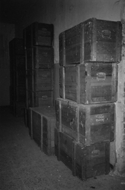
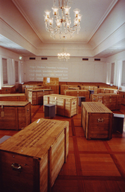
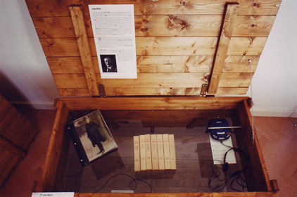

"Leben Terror Geist " (Life - Terror - Mind), 1999 - 2003. Buchenwald Concentration Camp: Portraits of Intellectuals and Artists   73 wooden transport crates, approx. 90 x 50 x 60 cm each This exhibition presents the life and work of seventy-three former inmates - representative of many others - who, despite the diversity of their origins, their convictions and their life journeys, have one thing in common: their imprisonment in Buchenwald Concentration Camp.?In replicas of the wooden crates which inmates of Buchenwald Concentration Camp were required to manufacture in 1943 for the safekeeping of valuable archives from the centres of German classicism, testimonies to their lives and work are presented: manuscripts, photographs, pictures, letters, sound recordings and personal objects.?The exhibition was developed in cooperation with the Weimar 1999 Kulturstadt Europas GmbH and is the result of collaboration between historians and artists. Exhibition Stations: 1999 - Buchenwald Memorial, Weimar, Germany 2000 - Goethe national Museum, Weimar, Germany 2003 - Mechelen, Belgium  Close Window All content copyright 2006 Naomi Tereza Salmon - all rights reserved |